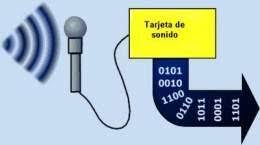
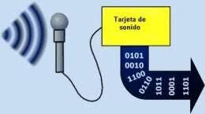

Introducción
Estas tres etapas permiten representar una señal analógica en forma digital. Según Shannon y Nyquist, el muestreo es clave para evitar pérdidas de información.
 

Desarrollo
En conclusión, estas etapas son fundamentales para una conversión precisa.